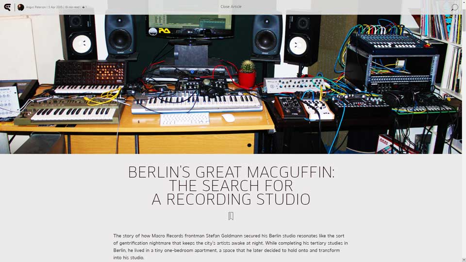
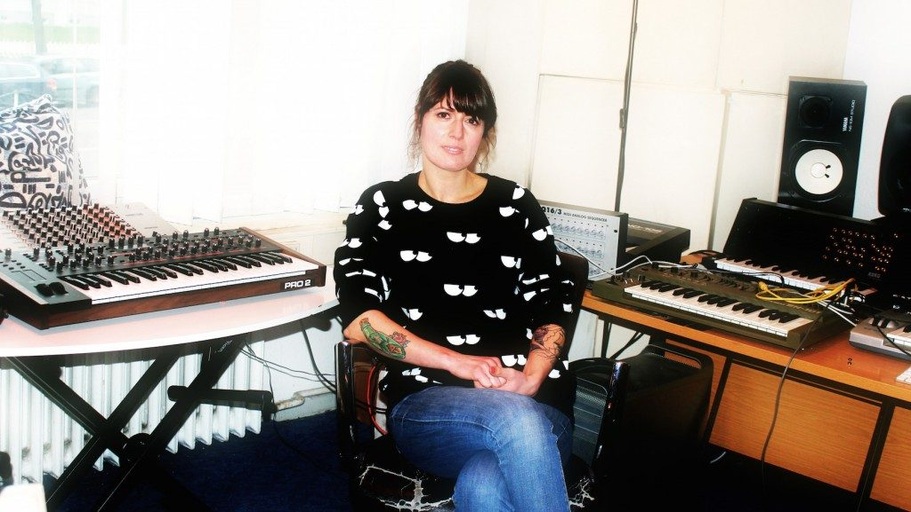
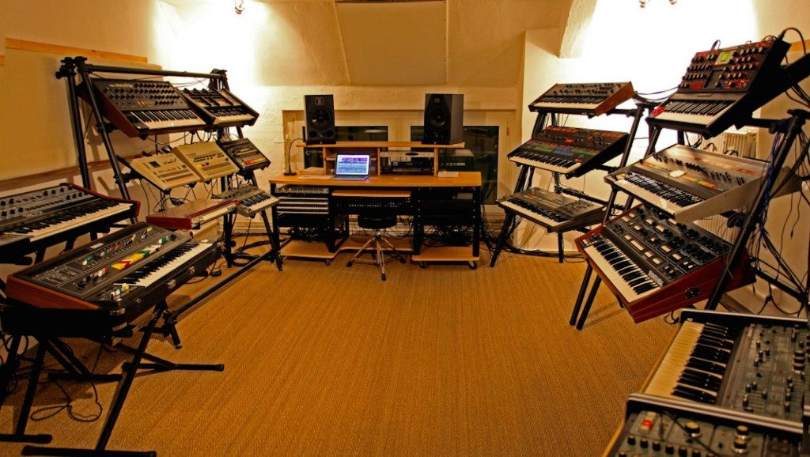

Berlin’s Great Macguffin: The Search For a Recording Studio
{kind=link}

The story of how Macro Records frontman Stefan Goldmann secured his Berlin studio resonates like the sort of gentrification nightmare that keeps the city’s artists awake at night. While completing his tertiary studies in Berlin, he lived in a tiny one-bedroom apartment, a space that he later decided to hold onto and transform into his studio.
“During the financial crisis, the owners of the building began selling all the apartments one by one,” Goldmann told DJBroadcast. “It was an investment entity for specific tax write-offs, and their write of term had expired. And because of the fear of imminent financial meltdown, many middle class Europeans were trying to save money by buying Berlin real estate. In 2008, you could certainly buy very, very cheaply compared to any other European capital.”
“This is truly a mass phenomenon in some areas. They didn't buy it to rent it out, too much hassle I guess, so they just hold on to it as a holiday flat for their own Berlin visits. Essentially, the apartments are now empty 11 out of 12 months. The effect for Berliners is that these apartments are not available to renters. However, the effect for me is that I have no neighbours under and around my studio, and nobody to complain about the noise.”
While Goldmann might have inadvertently flipped the symptoms of gentrification to work in his favor, the general story of electronic artists searching for a studio space in Berlin is more of a pained one; typically involving long, and often fruitless searching. There’s also a distinct lack of middle-range options; a choice of either a ghetto space at a rock-bottom price on the outer fringes of the city, or otherwise a high-end space with a price tag that’s simply not affordable for many electronic producers; and little in-between.
However, while gentrification makes for an easy villain, it’s not the full story. The narrative of Berlin’s techno scene revolves around the ravaged urban landscapes and abandoned buildings that opened up in the east when the Berlin Wall fell, but inevitably, the city’s golden era of abundant empty space at ludicrously low prices was bound to come to an end. The biggest contributor now is simple supply-and-demand factors, related to Berlin having one of the highest per-capita concentrations of electronic artists anywhere in the world.
"...There was even bats nesting in the hallways, it was proper ghetto...”
When You Lose Your Studio to Luxury Apartments
German born DJ/producer Mike Koglin had lived in London for nearly 20 years, with a background in club music for the same amount of time. Returning to live in Berlin several years ago, he immediately commenced the hunt for a studio, and was delighted to discover that the century-old Arkonahöfe building was conveniently situated across the road from his new Prenzlauer Berg apartment. Always a popular location for the creative industries, it housed numerous record labels and studio spaces.
“For me it would have been absolutely perfect, I’d leave the flat and walk across the street and be in my studio already. But just as I moved in, pretty much that same month, they kicked everyone out. I went in to ask around and check out the place, and they were like, ‘forget it mate’. Everything was being packed up. It was being converted to luxury loft-style apartments."
Koglin’s experiences after that were depressingly standard for artists looking for a studio in Berlin; a search stretching on literally for years, as well as stints in less than ideal spaces.
“For a year and a half I was in Lichtenberg, somewhere between IKEA and Baumarkt, so a fairly horrible area really. In that part of Berlin, in those former East German office blocks you can find quite a few rehearsal spaces, but they’re not proper recording studios. They’re basically just rooms that are totally untreated. They’re good for bands, and they’re dirt cheap at just around €100 a month. But they’re full of rock and indie bands, people practicing the trombone, very loud and noisy. When the band below me would start rehearsing, I would just pack up and go home.”
Attempting to produce music in such a compromised space is hardly a unique story, though. Swedish-born Fredrik Nyberg AKA NIBC had worked as a DJ/producer in his home country since the 90s, and when he first moved to Berlin in 2008 it took him over a year to find a space. A common obstacle for the more central areas like Prenzlauerberg and Mitte, under heavy development at the time, was short-term contracts, with the spaces already been sold and being readied for renovation. The spot he eventually found was at the now deceased Villa on Landsberger Allee, a club that he describes himself as a “trashier version of Zur wilden Renate.”
“There were big holes in the ceiling, there were homeless people lighting fires in the basement. There was even bats nesting in the hallways, it was proper ghetto,” he told DJBroadcast. “It was the sort of place where you’d take some artists, and they’d be scared for their life. And the whole vibe there was just weird, and it was really poorly insulated for sound too. There’d be a super horrible band that’d start rehearsing punk music next to you. And it was super cold during the winter as well, it had a radiator and a heating fan, but neither of them really worked properly, you could only stand it for three hours before it’d be too cold to even work there at all.”
Much like Berlin itself, the rough-around-the-edges feel of the studio held a certain charm. “Back in Sweden, I worked in a more professional studio, where you’d go to the water cooler and speak with suits who were producing music for ad campaigns, or otherwise really cheesy Swedish House Mafia style music. So compared to that, in terms of making house and techno, it was more the place to be. Convenience wise though, it didn’t work at all in a lot of ways.”
Cosmin Nicolae AKA Cosmin TRG had a more pleasing initial experience when he relocated from Bucharest to Berlin several years ago. Modeselektor were kind enough to allow him to setup in the vocal booth of their studio inside Weekend Club for the recording process of his Simulat album, where he enjoyed spectacular views of West Berlin. However, the studio was eventually closed, and since then Cosmin has carried an air of wearied exasperation about his experiences.
“After that I basically searched for a studio for about eight months, until I decided to just setup in my living room and make music,” he told DJBroadcast. “Not the first, and probably not the last time I had to do that. But it always depends on what you’re looking for. Four walls for an Ikea desk and laptop setup you can find everywhere, and they can be cheap too, but anything on the higher end of the spectrum, such as treated rooms in a central area and in a safe building, tend to be either fantastically rare or rather too expensive. When asked, people in the know usually come up with three or four spots that either don’t exist anymore, or haven’t had vacancies in ages."
“...After that I basically searched for a studio for about eight months, until I decided to just setup in my living room..."
Keeping Things at Home
Cosmin’s experiences reflect those of many producers living in Berlin who’ve decided to give up on the search for a studio altogether, and just record at home. Jan Spielberger AKA DJ Shir Khan from the Berlin-based Exploited Records, says that’s largely the case both for his label’s stable of artists, as well as what he’s otherwise observed in Berlin; though it’s a choice made for reasons both of convenience as well as affordability.
“Most people I know don’t even have a real studio anymore, and do everything at home,” he told DJBroadcast. “Others might rent studios from friends for a few days, while others might just go into the studio to mix during the final stages of mixing down their tracks.”
Elsewhere, it’s a choice that’s simply forced upon artists when they grow tired of the search. “A lot of people just decide to give up after a while and make their music at home,” says Nyberg. “Even the big touring artists, you’d be surprised how many have a bedroom setup. They’re making a lot of big tunes and travelling every weekend, but they still don’t have a proper studio. People are even looking for bigger houses that they can take over and set up studios in.”
The East Berlin Studio
From the streets it’s a building that appears unassuming, not unlike the medium-density apartments that surround it on either side. Actually a former office for the secret-police during the GDR era, in Berlin’s grand tradition of transforming abandoned communist quarters into havens for electronic music, it now houses 25 studios and a community of artists that includes a legion of Berlin's finest techno producers.
These studios provide an attractive option for its mix of underground and established artists for a number of reasons. While it’s situated in a more remote Eastern-Berlin district, it’s also close to the border of the more accessible Friedrichshain, and it’s also priced affordably for up-and-comers. Managed by DJ/producer Cinthie Christl AKA Cinthie, who also runs the Beste Modus and Unison Wax labels, she says there is little chance the studios could satisfy the insatiable demand that exists for studio space in Berlin.
{kind=link}

“We have a waiting list of something like 100 people at the moment,” she told DJBroadcast. “And the amount of artists moving to Berlin just keeps growing. Sometimes you’ll hear that a producer who you’ve been following for ages, they’ve just moved to Berlin and they’re looking a studio. They’ll be like, ‘oh I’m a friend of (a famous Berlin DJ who has asked not to be mentioned - ed) and he told me he’s in a cool place, do you have any space available?’ I would love to help them out, but I can’t. We have rooms that are sublet to three different people at the moment, we’ve reached the maximum of who can fit in there.”
The building was leased from the ‘Liegenschaftsfond’, an organisation that manages state-owned land, after it had been lying empty for more than a decade; and a year ago it offered up the possibility of also taking over the entire adjoining building, to create an additional space that would house another 100 studios for the Berlin music community.
“I’ve been in touch with so many interesting people who really need a studio, and my idea was to build it up as a place where artists can meet and collaborate, we could even have a cafe in there. Networking is such a super important thing in this scene. And it would just be great to turn this old Stasi building into something great for Berlin, where all the artists could work together.”
While the demand is there, the project has since become stuck in bureaucratic hell; Cinthl says she’s received mixed messages of whether the building might instead be passed onto other property developers. While she’s received limited support from a music industry body known as Musicboard, on the whole she says support from the establishment has been lacking.
“This building has been empty for over ten years, and I could fill it up in one or two months. And it’s not just some crazy idea, we already have a business running successfully in there. So it made me super angry. Music is really important for Berlin, there’s not a whole lot of industry otherwise. It’s what brings people to the city. Sometimes I don’t understand why it’s not supported more.”
"...Music is really important for Berlin ... Sometimes I don’t understand why it’s not supported more...”
Making music on the River Spree
Someone who’s had a more fortunate experience working with the establishment is Martin Eyerer, who partnered with Tassilo Ippenberger from Pan-Pot to build Riverside Studios several years ago after relocating from Stuttgart to Berlin. The difference can be attributed to location; the Kreuzberg council is run by the Green Party, who acknowledge and support the role that nightlife and club culture plays in the district, Eyerer says.
“There are zoning laws that designate certain areas are not allowed for building flats. So if an area housed a club, a studio or something cultural, that usage would remain and the council is supportive of that. It realises Berlin is really benefiting so much from this creative music scene.”
While studio availability might be falling short of demand, Riverside Studios is an example of the opportunities that Berlin offers the creative community that would be impossible in other capitals. Situated right on the River Spree, with water views stretching to the iconic Oberbaum Bridge nearby, its 1,200 square meters house 20 heavily-treated, state-of-the-art studio spaces, with a diverse network of artists that includes Toby Neumann, David August and Booka Shade, plus a diverse cast of recording professionals from across the industry. The intention was to forge a creative hub where skills could be shared across the network.
While it’s considerably more expensive than roughing it in Lichtenberg, Eyerer says rents are still kept relatively low for the sake of allowing participation. The notion of such a high-end space being affordable in a city like New York or London would be unthinkable. However, Eyerer also says it’s an unrealistic expectation for artists to want to walk into an affordable, pretreated space. Instead, he suggests it’s a project that artists need to take upon themselves.
“In districts like Wedding and Lichtenberg, there is still a lot of space available to hire. However, not a lot of people are really prepared to dive into the whole construction process, and it really is something more than just making music. You’ll need to invest in treatment, and the cost of materials to just treat one room more or less properly can cost as much as €20,000.”
Taking the DIY approach
In fact, many of Berlin’s studio stories involve the artists going on the hunt themselves for a vacant apartment or office space that can be transformed. Marco Freivogel and Ingo Gansera Berlin from techno act Exercise One have plenty of experience in the DIY game, building their own studio when they first partnered over a decade ago, in the era when space in central Berlin was still abundant. Situated right next to the Hard Wax record store in Kreuzberg, it was home for five years and saw them sharing with Luciano, Lee Jones, Donato Dozzi among others.
Freivogel resumed the search for space several years ago, eventually coming across several floors of an apartment building in Kreuzberg. One floor is now occupied by Ali and Basti from Tiefschwarz, another a space that is shared by Peter Van Hoesen and Marcel Fengler, while the latest project is Handwerk Audio, a vintage synthesizer studio packed with classic hardware that is running in sync, allowing producers to plug in their laptop, choose their synth and record to their hard drive with mastering-grade audio conversation.
“The idea was that we wanted to build a synthesiser studio, to give people the opportunity to come in and play with this classic gear, which is so rare and expensive. Some people know the synths already from a plugin, while others aren’t even available as a plugin. We have a mixer to give the purist signal of the synth, and then when you leave it’s up to you what you do with that. It’s a whole other attitude to how you treat a machine, when you play it and when you touch it. It really is a different approach to creating music, than composing on your laptop.”
{kind=link}

Freivogel also pitches Handwerk Audio as a convenient value-add option for those who’ve decided to go down the home studio route. “The way artists produce is changing a lot. Those travelling have become mainly creators on their laptops, and so that’s a point where our studio becomes quite handy.”
For others who might be interested in transforming a more standard space into a studio, pre-fit options exist from companies such as the Berlin-based Musikon. Koglin went with one of their modules, which allow soundproofing and acoustic design in an appropriate space. “It’s sort of a control room box, which is a ten square-metre room with a window, double doors and double walls as well as floating floors, a full professional room.”
"...Berlin has a huge hip-hop scene for example, and they also need studios..."
Supply and demand
Freivogel asserts there is still space to be found in Berlin. However, while much of the city’s cultural life might happen in a several kilometer radius around districts like Mitte, Kreuzberg and Friedrichshain, finding space might involve looking to the outer circle of the city. However, he says it’s not necessarily a matter of urban renewal displacing the occupying demographic.
“Gentrification is part of the reason, but more so it’s simply the fact there are so many musicians here. We always speak only of our scene, which is the club scene and all the other electronica that comes with it. However, there’s other scenes competing for this space too. Berlin has a huge hip-hop scene for example, and they also need studios. The demand has become so big, the centre of Berlin cannot deal with it anymore.
“When we started around 2002, there was already many musicians in Berlin. And then a big movement began in 2006 when loads of people came, and it hasn’t stopped since then. Even today I have friends moving over from Belgium, London. It’s a city for art and for musicians.”
Nyberg is someone who says the problem hasn’t gotten any better or worse in the time he’s been living in Berlin, again putting the problem at a comfortable distance from gentrification.
“I think it’s been pretty consistent,” he says. “I’ve been looking for studios every other year for the entire time I’ve been here, and it’s always been consistently difficult to find something. I’m always aware of five or so other friends who are also looking at the same time. It’s kind of like this on-going problem that people don’t really have a solution to.”
“...I believe compared to other capital cities across Europe, it’s still affordable here...”
Sharing is Caring Freivogel on the other hand emphasises artist cooperatives and partnerships as the only way around this problem that there remains no real solution for.
“What is really good is when people start to share. Even if you have a room for €600, if you share it among three producers then this can be organised. One guy might want to work more at night, the other at day. I know a lot of studio partners who make it work this way, they have different working hours and they just share the space. And the good thing is that they can then share gear and equipment. This also brings a certain dynamic to the scene, and when many different people cooperate and share their working space, I believe this is a good thing.” “Just don’t give up, be open and talk to people. There might always be a gap in another studio where you can maybe share and participate. And don’t be afraid to call the landlord to ask what is going on in their house. We stumbled across this building in 2007, and it was just a simple sign that said ‘business space for rent’. The people were very nice and open and showed us immediately the space, and there were several floors available. While something like this is more rare nowadays, I’m sure if you work hard on this you can find something.”
Mike Koglin advises keeping your eye out for unconventional spaces, and being prepared to do the treatment yourself. “While I was renting my space out at Lichtenberg, I was cycling around on my bicycle trying to discover hidden little spaces that could function as a studio. I was looking on Craigslist and Ebaykleinanzeigen, that kind of stuff, but no luck for at least a year. Finally I found a great space on Schönhauser Allee in an ex brewery. There are already a few recording studios there, and although the room was untreated, I was able to setup my studio control box in there.”
And while conversation often focuses on how much rents are rising, the unanimous sentiment from artists DJBroadcast spoke with was that ultimately Berlin still remains a more accommodating and forgiving place for creative endeavors than it is given credit for.
“I believe compared to other capital cities across Europe, it’s still affordable here,” says Freivogel. “People start to complain, but then when somebody comes over from London or Paris and they see the size of the flats… When you’ve lived your life here and you see it changing, of course it affects you more. But you get a different perspective when you travel across the rest of Europe and see the artistic communities there.”
These are sentiments echoed by Stefan Goldmann from Macro Records. “I don't really know anybody who has complained about not being able to rent a place at a reasonable cost. I mean, if jazz guys who earn €750 a month can afford a rehearsal space, then there is probably still no real problem at all, unless you’re obsessing over having your studio in the hottest part of town. If you think about the job of trying to find a studio in cities like London or Amsterdam, there's no real problem here at all in comparison.”